The most important pharaohs and rulers of Egypt
Hover over image to watch and read more
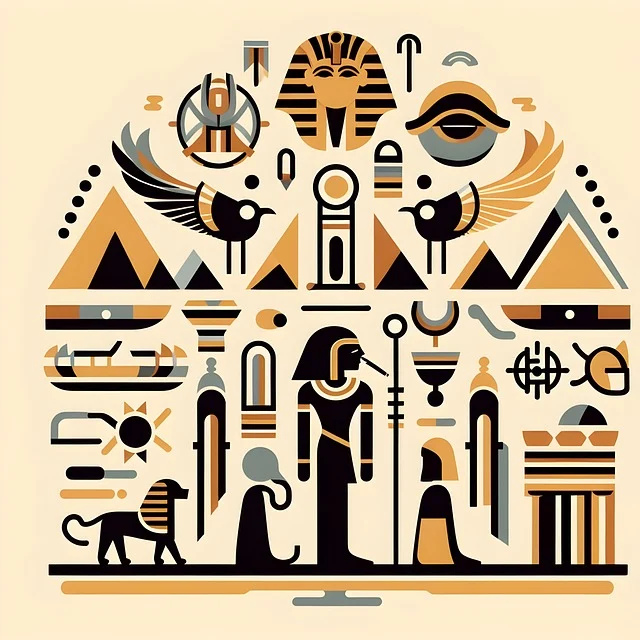
watch The First Pharaoh | Narmer | Ancient Egypt Documentary [6:00 min.]
watch THE FIRST PHARAOH - Narmer (Part1) [20:35 min.]
watch The FIRST Pharaoh - Narmer (Part2) [23:07 min.]
Pharaoh Narmer
3000 BC
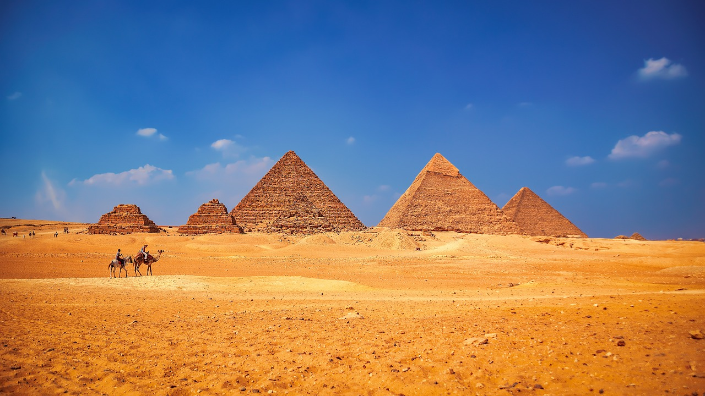
watch Khufu - The Pharaoh Who Built the Great Pyramid Documentary [56:20 min.]
watch KHUFU: Pharaoh of Ancient Egypt - Man Behind Giza Pyramid (Documentary) [21:44 min.]
read Khufu - King of Egypt (Britannica)
Pharaoh Cheops (Khufu)
2620 - 2580 BC
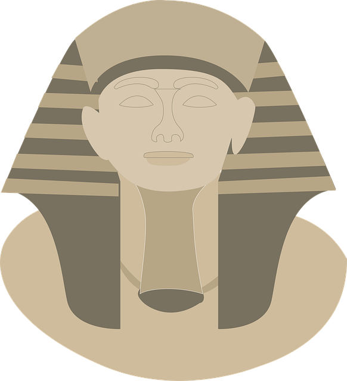
watch Pharaoh Djoser - the first pharaoh to invent a pyramid [18:20 min.]
watch The Step Pyramid of Djoser, an Architectural Revolution [43:19 min.]
watch Djoser : Ancient Egyptian Pharaoh | First King of 3rd Dynasty [5:04 min.]
Pharaoh Djoser
2720 - 2700 BC
/>
read Khafre King of Egypt / Britannica
watch Khafre Enthroned: The 4,500-Year-Old Secret Behind Its 700-Mile Journey | Egypt Detectives[23:28 min.]
watch Khafre's Diorite Statue [6:44 min.]
Pharaoh Chephren (Khafre)
2570 - 2530 BC
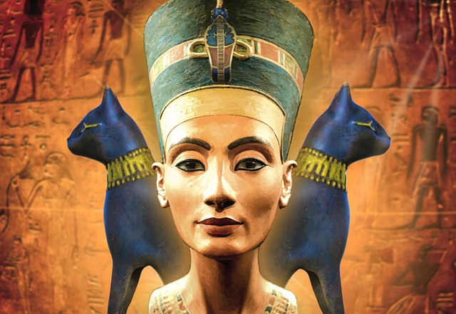
watch The Most Hated Female Pharaoh |Ancient Egypt Documentary [9:59 min.]
watch Nefertiti: Egypt's Enigmatic Queen of Beauty [18.54 min.]
read Nefertiti: Beauty, Power, and Mystery in Ancient Egypt
Nofretete -
Main wife of Pharaoh Akhenaten
1353 - 1336 BC
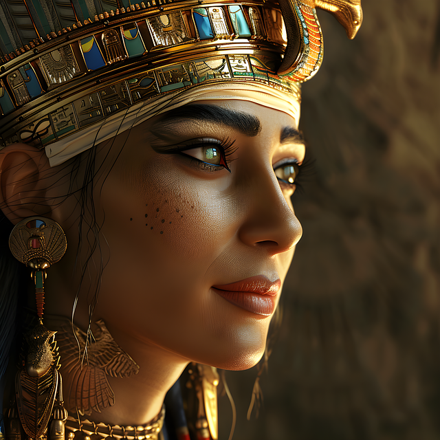
watch Nefertari: The Mysterious Royal Wife Of Ramses II | Life Of An Egyptian Queen | Real History [59:17 min.]
watch Visit Nefertari's Tomb [4:40 min.]
watch The Untold History Of The Women Who Dominated Egypt [59:13 min.]
Nefertari -
Great Royal Wife of Pharaoh Ramses II
2620 - 2580 BC
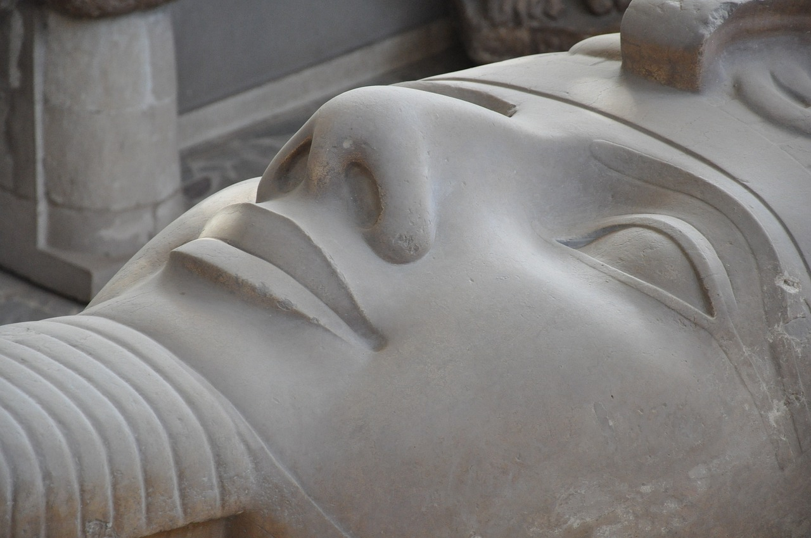
watch Ramesses the Great – Legendary Pharaoh of Ancient Egypt [1:02:24 min.]
watch RAMESSES II Had Kids With His Daughters [9:24 min.]
watch Egypt Pharaoh Ramesses II Rameses the Great [54:41 min.]
Pharaoh Ramses II
1303 - 27. Juni 1213 BC
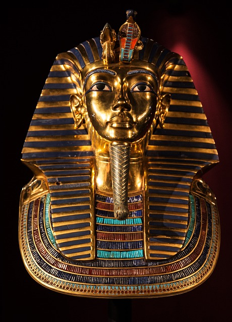
watch The Excavation of Tutankhamun’s Mummy | King Tut in Color [4:46 min.]
watch The Discovery and Treasures of King Tutankhamun's Tomb [56:57 min.]
watch Tutankhamun's Treasures (Full Episode) | Lost Treasures of Egypt [44:24 min.]
Pharaoh Tutanchamun
1332 - 1323 BC
watch Rise from Ruins: Mentuhotep II and the Dawn of Egypt's Middle Kingdom [7:21 min.]
watch Mentuhotep II: The Pharaoh Who Restored Egypt [11:15 min.]
read Mentuhotep II - King of Egypt / Britannica
Pharaoh Mentuhotep II.
2061 - 2010 BC
watchAkhenaten - The Fanatical Pharaoh Documentary [55:44 min.]
watch The Forgotten Alien Pharaoh | Akhenaten [10:09 min.]
read Akhenaten - King of Egypt / Britannica
Pharaoh Echnaton (Akhenaten)
ca. 1351 – 1334 BC
watch The Greatest Female Pharaoh |Ancient Egypt Documentary [8:30 min.]
watch Hatshepsut - The Woman Who Became a King [1:03:56 min.]
read Hatshepsut - Female ruler of Egypt / Britannica
Hatschepsut (female) Pharaoh
ca. 1479 - 1458 BC
watch Amenhotep III: Was This Man Egypt's Greatest Pharaoh? [58:49 min.]
watch THE FIRST PHARAOH - Narmer (Part 1) [20:35 min.]
watch The Wealthiest Pharaoh | Ancient Egypt Documentary[14:59 min.]
Pharaoh Amenhotep III
ca. 1388 - 1351 BC
watch The Deadliest Pharaoh | Ancient Egypt Documentary[10:00 min.]
watch Thutmosis III & Hatschepsut [8:14 min.]
watch Thutmose the Great: One of the most powerful Pharaoh [4:48 min.]
Pharaoh Thutmosis III.
ca. 1486 - 4. März 1425 BC
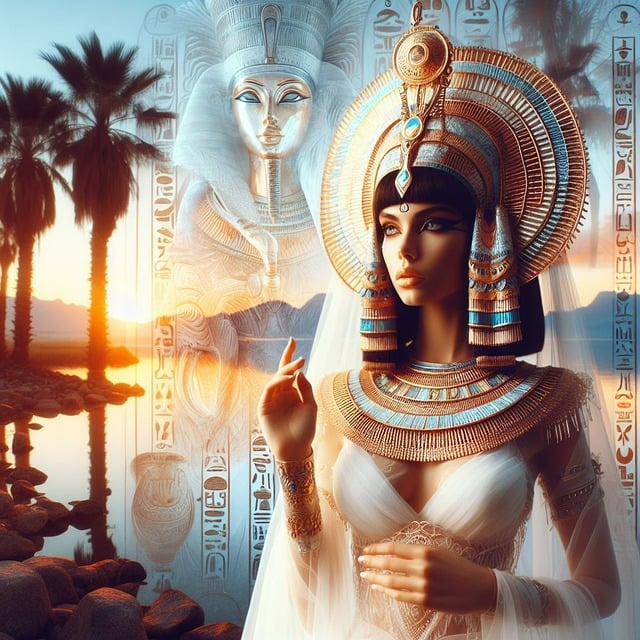
watch Cleopatra VII: The Last Pharaoh of Egypt [7:29 min.]
watch Cleopatra "The Last Pharaoh" [14:35 min.]
watch Cleopatra's Lost Tomb (Full Episode) | Lost Treasures of Egypt [44:24 min.]
Pharaoh Cleopatra VII.
ca. 69 BC - 10 August 30 BC
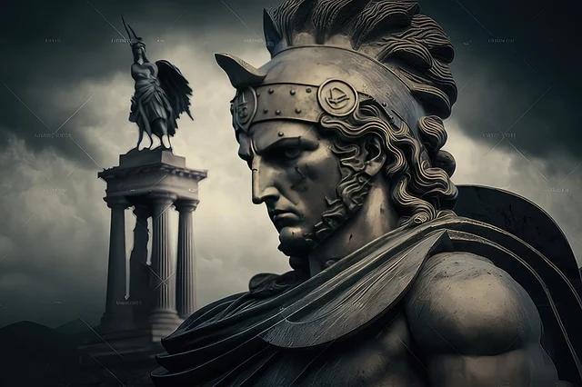
watch The Greatest General in History? [53:12 min.]
watch Scientists FINALLY Opened The Tomb Of Alexander The Great [13:19 min.]
watch Alexander the Great Family Tree [13:02 min.]
King Alexander the Great
ca. 356 - 323 BC
watch Saladin - Conqueror of the Kingdom of Heaven [55:00 min.]
watch Who is Saladin? The Untold Truth [10:38 min.]
watch Siege of Acre, 1189 - 1191 Third Crusade [37:38 min.]
Sultan Salah El Din (Saladin)
ca. 1137 - 1193 AC
watch The First Pharaoh | Narmer | Ancient Egypt Documentary [6:00 min.]
watch THE FIRST PHARAOH - Narmer (Part 1) [20:35 min.]
watch The FIRST Pharaoh - Narmer (Part 2) [23:07 min.]
Gouverneur Muhammad Ali Pascha
ca. 1770 - 2. August 1849 AC
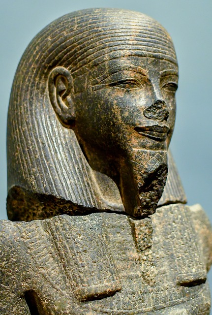
watch 100 Greatest Pharaohs of Ancient Egypt [4:18 min.]
watch The Greatest Pharaohs [2:15:49 min.]
watch 18. Egypt - Fall of the Pharaohs [3:59:12 min.]
More about Egypt`s Pharaohs
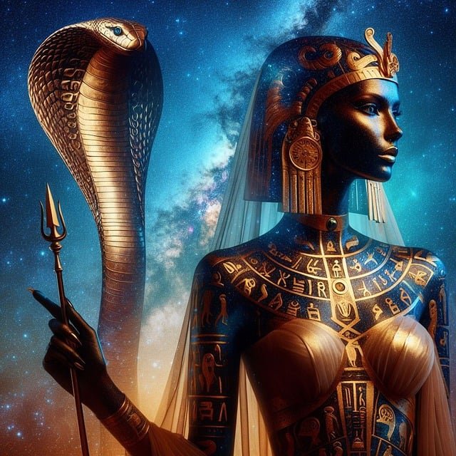
watch The First Female Pharaoh | Sobekneferu [7:59 min.]
watch Famous Female Pharaohs and Queens of Ancient Egypt [13:48min.]
watch Top 5 Female Pharaohs of Egypt [9:08 min.]
Egypt`s female Pharaohs
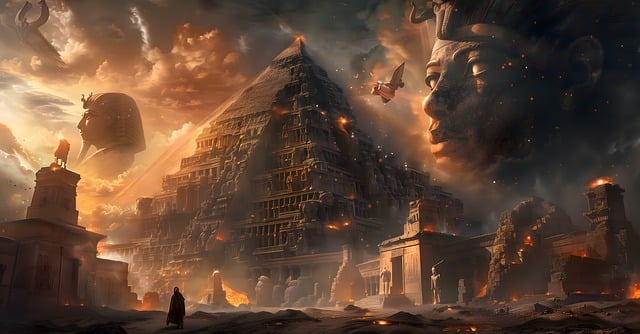
watch Why did Ancient Egypt Collapse? [11:34 min.]
watch Why Did Ancient Egypt Eventually Fall? [58:51 min.]
read What Caused Ancient Egypt’s Decline?
The End of Egypt`s Pharaohs / Ancient Egypt
continue